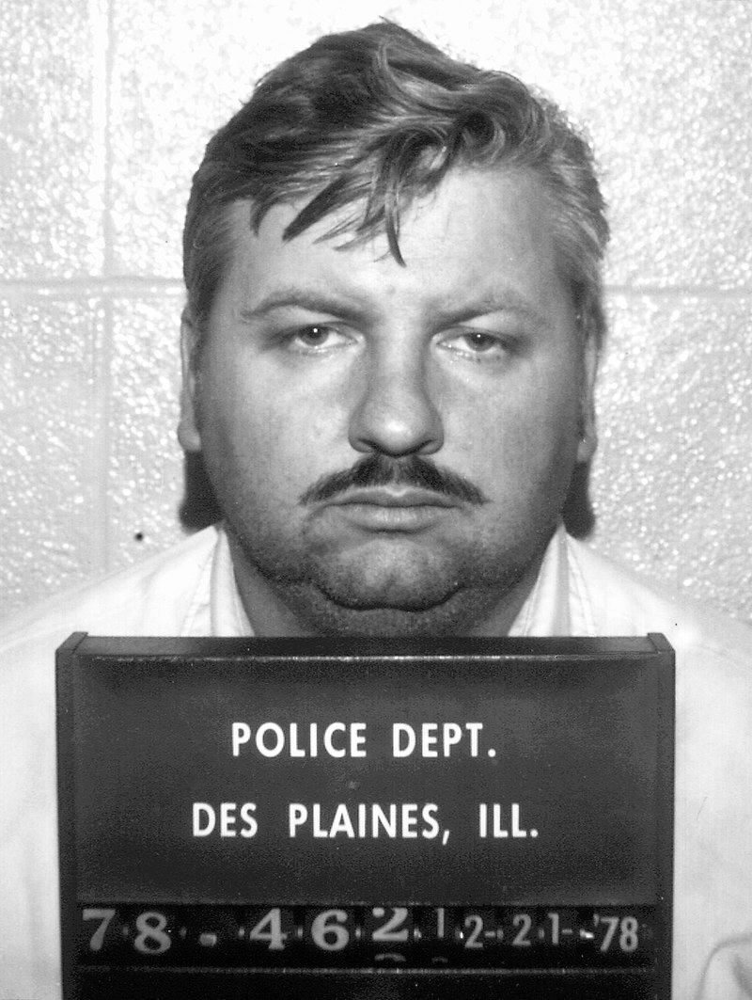
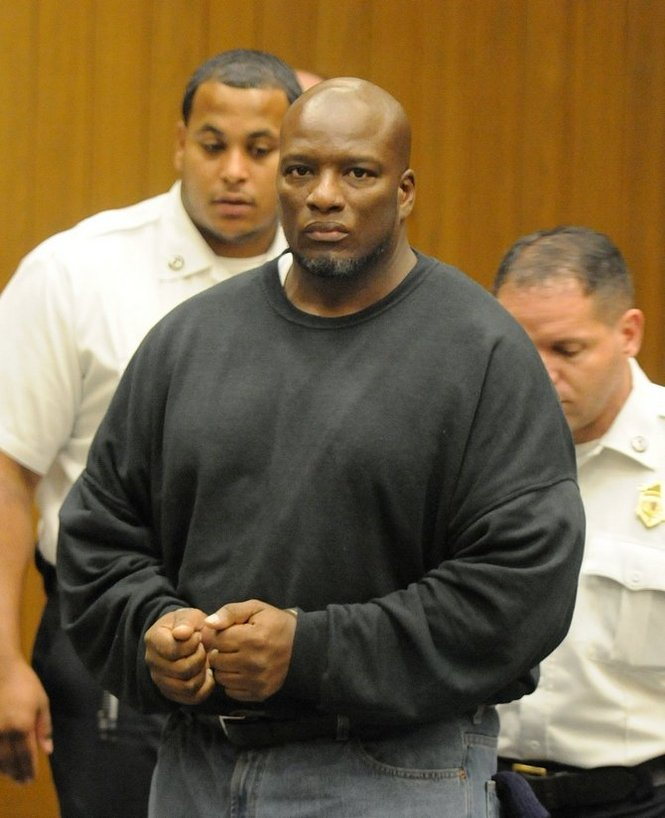
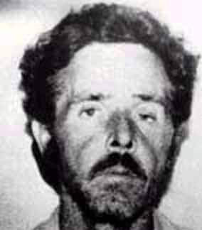

I 5 Disegni più Spaventosi realizzati dai Serial Killer
Quando si pensa ad un serial killer la mente vola rapidamente alle stragi di cui si sono resi responsabili.
Esiste un prima ma sopratutto un dopo rispetto a quando si è riusciti a scoprire un assassino, fatti di
tempo che scorre in modo assolutamente noioso in prigione o in modo assurdo prima della cattura. Il termine
"murderabilia" indica il mercato di nicchia che viene alimentato da collezionisti di
oggetti
creati o appartenuti ai serial killer, comprese le opere d’arte realizzate in carcere o prima della cattura
dagli
assassini.
Il numero di appassionati di questi cimeli di assassini è così elevato che esiste un sito appositamente
dedicato, Serial Killer INK , che raccoglie e commercializza materiale appartenuto ai
criminali più
famosi. Si possono trovare disegni, testi, lettere, cartoline, magliette e molto altro sul sito che è, per
alcuni,
un’offesa alla memoria e alla dignità delle vittime e delle loro famiglie.
Di seguito trovate i 5 disegni più terrificanti realizzati da 5 serial killer, opere d’arte (se così le si
può
definire) che ci consentono di entrare “nella mente dell’assassino”….
John Wayne Gacy

Condannato nel 1980 per l’omicidio di 33 ragazzi adolescenti e giovani uomini, John
Wayne Gacy fu
giustiziato con un’iniezione letale nel 1994. Mentre era nel braccio della morte, l’ex pagliaccio creò
alcuni disegni
raffiguranti il proprio alter ego chiamato “Pogo”, e una serie di altri disegni riguardanti i sette nani di
Walt
Disney. In un quadro intitolato “Il Baseball dei Nani” Gacy disegnò dei nani che giocano una partita di
baseball contro i Chicago Cubs. Per aumentare il valore di questo disegno l’acquirente fece firmare l’opera
dalle
stelle del baseball Ted Williams, Willie Mays, Mickey Mantle, e Joe Dimaggio, senza dire loro di cosa si
trattasse
prima di aver ottenuto l’autografo.
Keith Hunter Jesperson
Conosciuto come il killer della "Happy Face", Keith Hunter Jesperson fu
responsabile
della morte di almeno 8
donne durante il 1990. La figlia scrisse un libro di memorie con i dettagli dei suoi inquietanti ricordi
d’infanzia legati al proprio padre. Il disegno di Jesperson che raffigura un neonato nella culla fa venire
i
brividi lungo la spina dorsale, come se lo spettatore si trovasse di fronte alla versione di Jesperson
neonato.
Alfred Gaynor

Tra il 1995 e il 1998 Alfred Gaynor uccise almeno 8 donne nella zona di Springfield, in
Massachusetts.
Era noto
per deturpare le proprie vittime in modi orribili, al fine di rendere la scoperta dei loro corpi il più
traumatizzante possibile. Questo disegno dal titolo “Murder Beach”, è esattamente quello che ci si
aspetterebbe
di vedere disegnato dalla mente di un serial killer.
Charles Manson
Anche se tecnicamente Charles Manson in realtà non ha mai ucciso nessuno, è stato condannato per
essere
il
mandante di alcuni degli omicidi più terribili dellaCalifornia, fra cui quello di Sharon Tate, moglie di
Roman
Polanski, che fu uccisa a 26 anni mentre era incinta di 8 mesi. Durante tutta la sua vita ha trascorso molto
più
tempo in carcere che fuori, e le sue opere d’arte sono diventate un vero e proprio “must” per gli amanti dei
“murderabilia”.
Henry Lee Lucas

Henry Lee Lucas iniziò la sua carriera di serial killer uccidendo sua madre nel 1970. Per i
successivi
13 anni riuscì a sfuggire alle autorità conducendo uno stile di vita nomade. Lucas si auto-accusò di
centinaia
di omicidi, ma fu condannato soltanto per 11 di questi. I disegni del criminale rivelano la visione
deturpata e
fatiscente dell’essere umano, nella più classica interpretazione possibile della mentre di un serial killer.